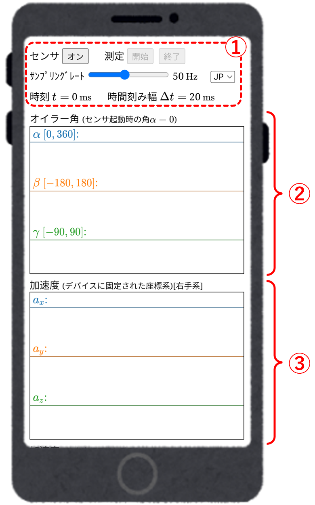
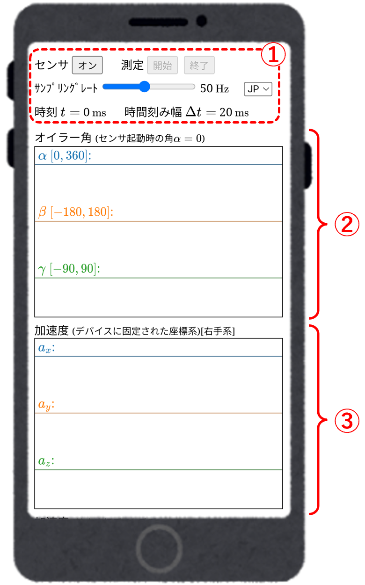
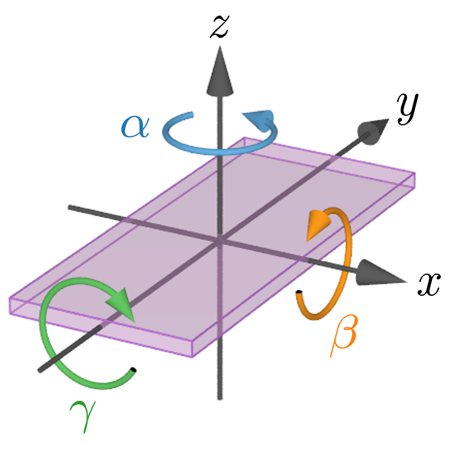
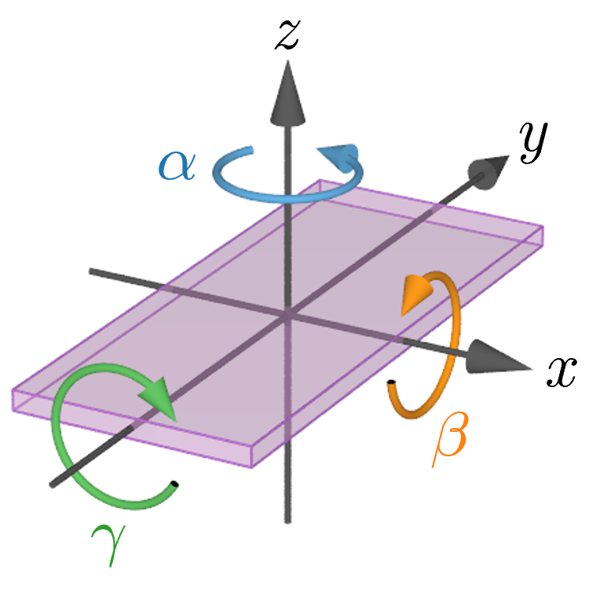
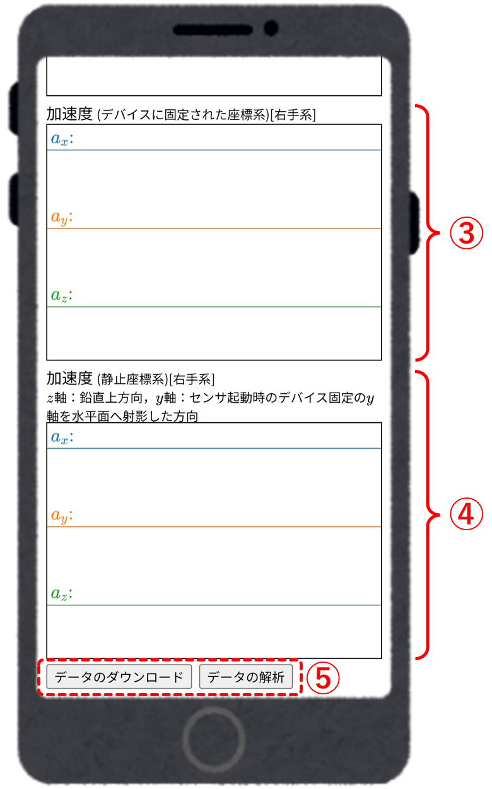
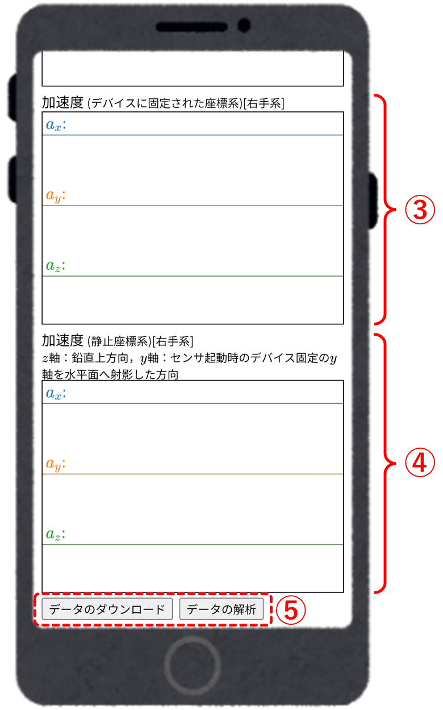

■ 画面構成
測定アプリの画面(1)


①
操作ボタン・スライダーなど
- センサ「オン・オフ」ボタン
加速度センサを起動(オン)または停止(オフ)する． - 測定「開始」・「終了」ボタン
「開始」ボタンで加速度データの測定（データの記録）を開始し，「終了」ボタンで測定を終了する． - サンプリングレート設定スライダー
測定サンプリングレートを$10\sim100\ {\rm Hz}$ の範囲で設定する（$50\ {\rm Hz}$の場合，$\Delta t=20\ {\rm ms}$毎に測定）． - 言語切替スイッチ
EN：英語，JP：日本語
②
方位角のグラフ（$z$-$x$-$y$系オイラー角）
下図のデバイスに固定された座標軸に対して，$\alpha$, $\beta$, $\gamma$ はそれぞれ $z$, $x$, $y$軸周りのオイラー角である．縦軸のスケールは各成分のグラフがはみ出さないように自動調整されるため，各成分ごとでスケールが異なる．


③
デバイスに固定された座標系での加速度のグラフ
$a_x$，$a_y$，$a_z$ はそれぞれ，デバイスに固定された座標系での加速度の$x$, $y$, $z$成分である．縦軸のスケールは各成分のグラフがはみ出さないように自動調整されるため，各成分ごとでスケールが異なる．
測定アプリ画面をさらに下方へスクロールすると回転補正により得られる静止座標系での加速度のグラフ領域が現れる．
測定アプリの画面(2)


④
静止座標系での加速度のグラフ
静止座標系の$z$軸の方向は鉛直方向（鉛直上向きが正）であり，静止座標系での$y$軸の方向は，加速度センサ起動時においてデバイスに固定された座標系における$y$軸を水平面に射影した方向である．
$a_x$，$a_y$，$a_z$ はそれぞれ，静止座標系での加速度の$x$, $y$, $z$成分である．縦軸のスケールは各成分のグラフがはみ出さないように自動調整されるため，各成分ごとでスケールが異なる．
$a_x$，$a_y$，$a_z$ はそれぞれ，静止座標系での加速度の$x$, $y$, $z$成分である．縦軸のスケールは各成分のグラフがはみ出さないように自動調整されるため，各成分ごとでスケールが異なる．
⑤
ダウンロード・解析
- 「データのダウンロード」ボタン
測定で得られたデータをCSV形式ファイルとしてダウンロードする．CSVファイルのデータ列は
1列目：時刻 $t$
2-4列目：オイラー角 $\alpha$, $\beta$, $\gamma$
5-7列目：デバイス固定の加速度の$x$, $y$, $z$成分
8-10列目：静止座標系での加速度の$x$, $y$, $z$成分
となっている．ダウンロードしたデータは，加速度解析Webアプリや Microsoft Excel，Googleスプレッドシートなどの表計算ソフトで読み込める． - 「データの解析」ボタン
測定で得られたデータを加速度解析Webアプリに送り，解析アプリ画面に移る．測定データをスマートフォンなどでも即座に解析できる．